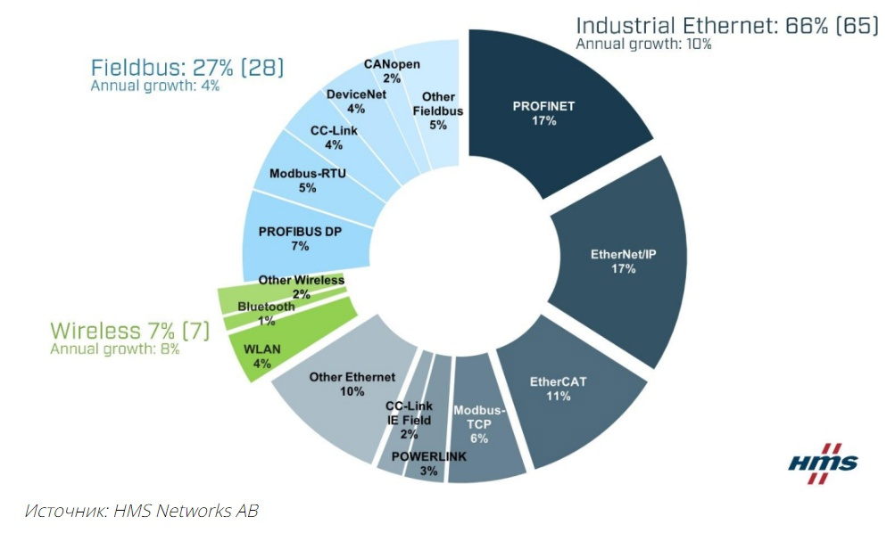
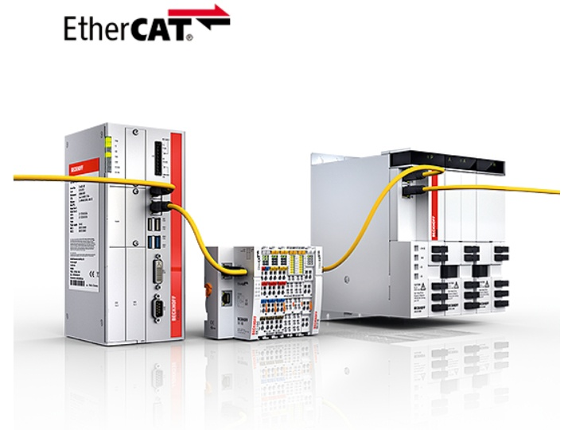

В данной статье рассмотрим один из наиболее быстродействующих способов передачи данных в системах автоматики — сеть EtherCAT.
Для того, чтобы говорить о распространенности и востребованности того или иного протокола обмена в системах промавтоматики, приведем диаграмму компании HMS Networks AB, которая ежегодно представляет иллюстрацию долей рынка различных технологий обмена в промышленных сетях.

Как видно на диаграмме, лидирующие позиции занимают: PROFINET, EtherCAT и EtherNet/IP.
PROFINET и EtherNet/IP делят первое место в рейтинге сетей с долей рынка по 17% каждая.
EtherCAT замыкает рейтинг сетей EtherNet/IP и PROFINET на вершине рейтинга, впервые достигнув двузначных показателей с долей рынка 11%.
Вторые места: PROFIBUS и Modbus/TCP.
Технологии Modbus остаются популярными благодаря простоте использования и продолжают широко применяться и на современных заводах, на долю которых в совокупности (Modbus RTU и TCP) приходится 11% рынка в 2022 году против 10% в 2021 году.
Рассмотрим подробнее один из наиболее быстродействующих способов передачи данных в системах автоматики — сеть EtherCAT. EtherCAT — это открытый международный стандарт: EtherCAT является официальной спецификацией IEC/PAS 62407, частью стандартов IEC 61800-7, IEC 61784-2 и IEC 61158.
EtherCAT обеспечивает высокую скорость обмена, поскольку отсутствует стандартная схема «запроса мастера — ответа slave-устройства». Вместо этого осуществляется передача одной телеграммы всем устройствам, что минимизирует издержки на заголовки и прочие атрибуты.
Отсутствует буферизация данных процесса на уровне устройств связи с объектом (УСО) и на уровне мастера шин. Это позволяет аппаратно обрабатывать телеграмму каждым устройствам мгновенно, забирая из нее те данные, которые предназначались ему и в процессе отсылки заменяя те биты пакета, в которых оно должно передать информацию следующему подчиненному узлу.
По завершении всех этапов телеграмма возвращается главному контроллеру для осуществления управления, взаимодействуя с подчиненными узлами. Отправка телеграммы EtherCAT строго синхронно с каждым циклом управляющей задачи ПЛК позволяет обеспечить минимальное время реакции на случайное событие.
С точки зрения сети Ethernet, вся шина EtherCAT целиком является одним участником. Только мастер шины EtherCAT может быть инициатором пакета. Все остальные slave-устройства просто пропускают этот пакт через себя и изменяют лишь область данных EtherCAT и CRC-код в конце пакета. Все стандартные заголовки Ethernet (MAC-адрес источника, MAC-адрес приемника, тип пакета) остаются неизменными. У всей сети устройств EtherCAT есть только один MAC-адрес — это MAC-адрес мастера.
К основным преимуществам этой сети следует отнести:
- максимальное использование высокой пропускной способности канала Ethernet;
- наличие интернет-технологий даже в самых простых устройствах;
- качественные параметры реального времени при небольшой стоимости.